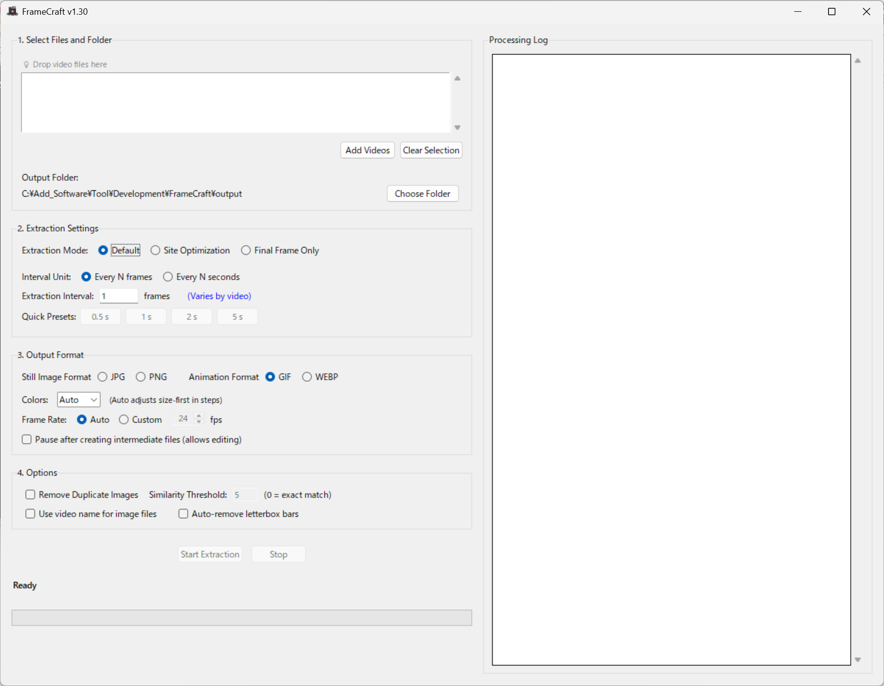

Windows
Desktop
Batch Processing
Offline Processing
Frame Craft
Extract video frames and convert to animations (GIF/WEBP) with high precision. Perfect for screenshot extraction, animation creation, and Pixiv ugoku-illust workflows.
$5
Main Uses
Frame Extract
Outputs
Image / Anim
Processing
Batch
Formats
14 Types
Overview
Frame Craft is a powerful tool for extracting frames from videos and animation files at specified intervals, or converting them to animation formats (GIF/WEBP). It's designed for content creators who need precise frame extraction, duplicate image removal, and animation creation workflows.
- High-precision extraction with frame/second-based settings
- Duplicate removal using perceptual hash technology
- Batch processing via drag & drop
- 14 video formats including MP4, AVI, MOV, GIF, WebP
- Animation output: GIF/WEBP + Pixiv ugoku-illust mode
Supported Formats
Input formats
- MP4, AVI, MOV
- MKV, WMV, FLV
- WebM, MPEG, MPG
- M4V, TS, OGV
- GIF, WebP (animation)
Outputs
- Images: JPG, PNG
- Animations: GIF, WEBP
- Pixiv ugoku-illust format
- Last frame extraction
Key Features
■ High-precision Frame Extraction
- Precise frame interval or second-based extraction
- Automatic FPS detection for optimal extraction
- Pixiv ugoku-illust output mode
- Video to animation format conversion (GIF/WEBP)
■ Automatic Duplicate Removal
- High-precision similar image detection using perceptual hash technology
- Memory-efficient processing for large image batches
- Removes duplicate and nearly identical frames automatically
■ Batch Processing & Efficiency
- Drag & drop multiple videos for batch processing
- Real-time progress display and detailed log output
- Monitor processing status at a glance
■ Additional Convenient Features
- Automatic black bar removal (auto-crop borders)
- Intuitive GUI design for easy operation
- Last frame extraction for video concatenation workflows
How to use & UI screenshot
How to use
- Click the "Add Video" button or drag & drop video files
- Click the "Start Extraction" button to begin processing
Simple two-step process makes it easy to extract frames from your videos and convert them to animations.
UI screenshot
UI (English)
System requirements
- OS: Windows 10/11 (64 bit)
- Memory: 4GB+ recommended
- Storage: 100MB+ free space required
No GPU required. Runs on CPU for universal compatibility.
Trial Version
Windows 10/11
Trial limitations
- Maximum 400 images/frames per video
- Process 1 video at a time
- Watermark added to output
Updates & Changelog
Current Version
v1.20
Release Date
2025-11-01
Latest Updates
- Added GIF/WEBP output support
- Enhanced frame extraction precision
- Improved duplicate detection algorithm
License & Usage Notes
License
- Personal use (including commercial): Included with purchase
- Corporate/enterprise use: Please contact separately for licensing
Important Notes
- Processing time may vary depending on video length and PC specifications
- Always verify output results for accuracy
- Frame extraction accuracy may depend on video quality and encoding